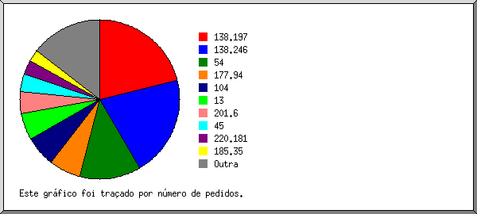
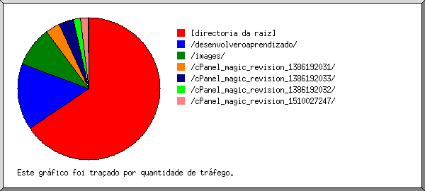

(Ir a: Início | Sumário Geral | Relatório Mensal | Resumo Diário | Resumo Horário | Relatório de Domínios | Relatório de organizações | Relatório de referência falhada | Relatório do sítio de referência | Relatório de Leitores | Resumo de Leitores | Relatório de Sistemas Operativos | Relatório de Códigos de Estado | Relatório de Tamanho de Ficheiro | Relatório de Tipos de Ficheiro | Relatório de Directorias | Relatório de Pedidos)

Mostrando as organizações, ordenadas por número de pedidos.
| N.ped | %bytes | organização |
|---|
| 102 | 25,35% | 138.197 |
| 48 | | 138.246 |
| 42 | 10,44% | 54 |
| 31 | 11,19% | 177.94 |
| 23 | 5,72% | 104 |
| 22 | 18,15% | 201.6 |
| 17 | 4,23% | 45 |
| 14 | 8,00% | 220.181 |
| 11 | 2,73% | 93 |
| 10 | 2,49% | 159.203 |
| 9 | 2,24% | 174.138 |
| 8 | 1,99% | 165.227 |
| 7 | 4,00% | 101 |
| 5 | 1,24% | 52 |
| 3 | 0,75% | 13 |
| 2 | 0,50% | 159.65 |
| 2 | 0,50% | 159.89 |
| 1 | 0,25% | 34 |
| 1 | 0,25% | 199.30 |
(Ir a: Início | Sumário Geral | Relatório Mensal | Resumo Diário | Resumo Horário | Relatório de Domínios | Relatório de organizações | Relatório de referência falhada | Relatório do sítio de referência | Relatório de Leitores | Resumo de Leitores | Relatório de Sistemas Operativos | Relatório de Códigos de Estado | Relatório de Tamanho de Ficheiro | Relatório de Tipos de Ficheiro | Relatório de Directorias | Relatório de Pedidos)

Mostrando as directorias com pelo menos 0,01% do tráfego, ordenadas por quantidade de tráfego.
| N.ped | %bytes | directoria |
|---|
| 289 | 58,98% | [directoria da raiz] |
| 21 | 18,14% | /desenvolveroaprendizado/ |
| 26 | 10,76% | /images/ |
| 6 | 4,06% | /cPanel_magic_revision_1386192031/ |
| 6 | 4,01% | /cPanel_magic_revision_1386192033/ |
| 3 | 1,96% | /cPanel_magic_revision_1386192032/ |
| 3 | 1,92% | /cPanel_magic_revision_1510027247/ |
| 1 | 0,12% | /css/ |
| 3 | 0,05% | /cPanel_magic_revision_1386192030/ |
 Estatísticas do Servidor Web de digitalfotoimagem.com.br
Estatísticas do Servidor Web de digitalfotoimagem.com.br ) representa 2 pedidos de páginas ou fracção.
) representa 2 pedidos de páginas ou fracção.